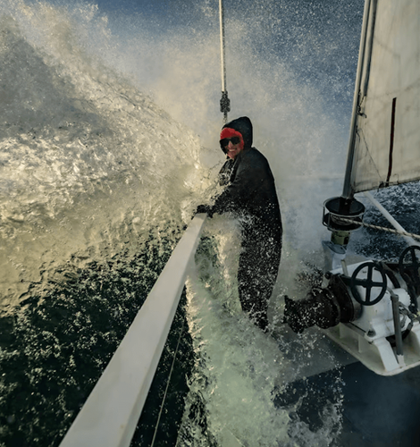
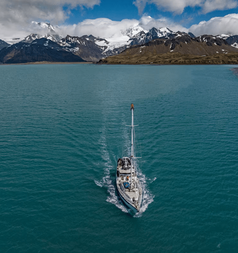
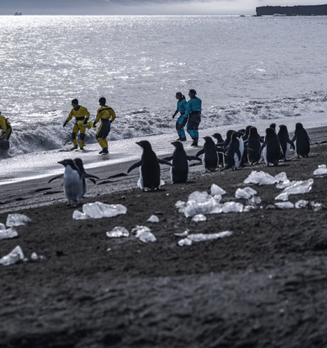

NATIONAL GEOGRAPHIC
One of Earth's loneliest volcanoes holds an extraordinary secret
TRAVEL
- 
- 
- 
When Emma Nicholson peeked into the crater of a remote volcano in the southern Atlantic Ocean, the British volcanologist gazed on a scene no human has seen before. The crater’s walls dropped steeply to the floor below, where, hidden from view, lies a lake of molten lava one of nature’s rarest phenomena.
Nicholson stood near the crater’s rim atop Mount Michael, an active stratovolcano about a thousand miles north of Antarctica, as a drone transmitted images of a lava pool far below to the hand-held screen in front of her.
“Suddenly, we could see this small lava lake right deep down inside the crater,” Nicholson recalls. “It was certainly not maybe the lava lake that you’d naturally conjure to mind … but it was unmistakably lava close to the surface, feeding the gas plume we were measuring.”
Unlocking clues to volcanic behavior
Lava lakes are among the planet’s most unusual geological features. Though there are about 1,500 active volcanoes on Earth, Mount Michael is only the eighth lava lake to be discovered. Some are bubbling cauldrons of molten magma, just like volcanoes are often portrayed in the movies. Others are more transitory, changing in depth or draining all-together depending on the pressure conditions within the system.
Typically, after an eruption, lava exposed to the atmosphere will cool into a solid plug of rock, trapping the volcano’s heat and gasses within. For a lava lake to form, Nicholson says, “the balance between heat coming up from within the vent system of the volcano must be perfectly balanced with the rate of cooling to keep the lava in its molten state.”
“They’re really just one phase of what’s called an open vent system,” Nicholson explains, a type of volcano that allows gasses from within the Earth to escape into the atmosphere. Because of that seepage, they’re regarded as less prone to explosive eruptions than closed vent systems—and a boon to volcanologists who are able to analyze the composition of the escaping gas for clues of what’s going on below the surface.
Mount Michael, isolated in the South Sandwich Islands a British overseas territory caught the interest of scientists in the late 1990s when a British Antarctic expedition noticed a strange pattern in the plume that regularly emanates from the peak. “The plume, which was unusually dense, was huffing and puffing,” says John Smellie, a British geologist. In 2001, he proposed in an academic paper the possibility of a lava lake in Mount Michael’s crater. In 2019, that possibility was firmed up by a new study using higher resolution satellite imagery. But no one had actually viewed the lake from Mount Michael on Saunders Island.
“The South Sandwich Islands, they’re tough to get to, tough to get ashore, tough to work on,” Smellie says. “You have to have a pretty good reason to go there.”
Crossing the ‘Furious Fifties’
The few hours Nicholson and her team spent on the rim of the crater were the culmination of months of planning and weeks of travel. Although it’s only 2,766 feet above sea level, the modest altitude of Mount Michael belies its extraordinary isolation.
“If you stand on Saunders Island,” says Nicholson, “your closest other humans are on the International Space Station. That’s the definition of remote.”
The team embarked last November from Stanley in the Falkland Islands aboard the Australis, a 75-foot steel-hulled vessel with Ben Wallis at the helm for the grueling 1266-mile passage to Saunders Island.
Just getting there, as Smellie says, may be the greater challenge than climbing the glaciated peak. At the 57th parallel south, Mount Michael sits directly downwind of the Drake Passage, right in the middle of the latitudes known as the “Furious 50s,” notorious to mariners for their unrelenting wind and ferocious storms.
“I’m a lot more traumatized about sailing now than before departure,” quips Joao Lages, a geochemist and volcanologist on the expedition, after enduring near constant seasickness enroute to the island.
Comments :
- john Very good
- john Very good
Leave a Reply
Your email address will not be published. Required fields are marked*
Related posts:
-
 Experience searching for ancient signs of life on Mars
Experience searching for ancient signs of life on MarsWhat is this? NASA’s Perseverance rover has touched down on Mars. National Geographic’s new augmented reality (AR) experience on Instagram allows viewers to become one with the rover as it searches
View article -
 Ultra-processed food isn't just bad for your health it messes with your mind
Ultra-processed food isn't just bad for your health it messes with your mindAlthough many ultra-processed foods soda, candy, energy bars, fruit-flavored yogurt, frozen pizza, and frozen meals can satisfy cravings for sweet, fatty, salty foods, emerging research suggests these items are particularly bad
View article -
 This 'Gate to Hell' has burned for decades. Will we ever shut it
This 'Gate to Hell' has burned for decades. Will we ever shut itTen years ago, National Geographic Explorer George Kourounis climbed into the Gate to Hell. The 230-foot-wide, 100-foot-deep pit in north-central Turkmenistan is formally known as the Darvaza Crater
View article